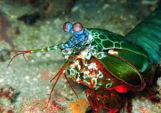

Fatos sobre o Stomatopoda

Informações Gerais
O camarão-louva-a-deus-palhaço Odontodactylus scyllarus, também conhecido como lagosta-boxeadora é uma espécie de tamarutaca nativa do Indo-Pacífico,[1] de Guam até a África Oriental.[2] Em aquários de água salgada, é uma atração tanto pela coloração quanto pelo perigo.
| Reino | Filo | Subfilo | Classe | Subfilo | Ordem | Latreille |
|---|---|---|---|---|---|---|
| Animalia | Arthropoda | Crustacea | Malacostraca | Hoplocarida | Stomatopoda | Latreille, 1817 |
Os Olhos mais incriveis da Natureza!

Os olhos são testamentos da criatividade da evolução. Todos eles fazem as mesmas coisas básicas - detectam a luz e a convertem em sinais elétricos - mas de uma variedade incrível de maneiras. Existem olhos simples e compostos, lentes bifocais e rochosas , espelhos e fibras ópticas . E há olhos que são tão estranhos, tão constantemente surpreendentes que, após décadas de pesquisa, os cientistas apenas descobriram como funcionam, quanto mais por que evoluíram dessa forma. Para encontrá-los, você precisa dar um mergulho.
O camarão louva-a-deus parece um satélite
“Curiosamente, o dispositivo mais próximo dos estomatópodes seria um satélite”, diz Marshall. “Algoritmos de sensoriamento remoto têm tabelas de pesquisa de cores para preencher a imagem que o satélite forma.”
O camarão louva-a-deus tem o ponche mais rápido do mundo

Em abril de 1998, uma criatura agressiva chamada Tyson quebrou a parede de vidro de um quarto de polegada de sua cela. Ele logo foi dominado por atendentes nervosos e mudou-se para uma instalação mais segura em Great Yarmouth. Ao contrário de seu homônimo peso pesado, Tyson tinha apenas dez centímetros de comprimento. Mas os cientistas descobriram recentemente que Tyson, como todos os seus parentes, pode dar um dos socos mais rápidos e poderosos da natureza. Ele era um camarão mantis.